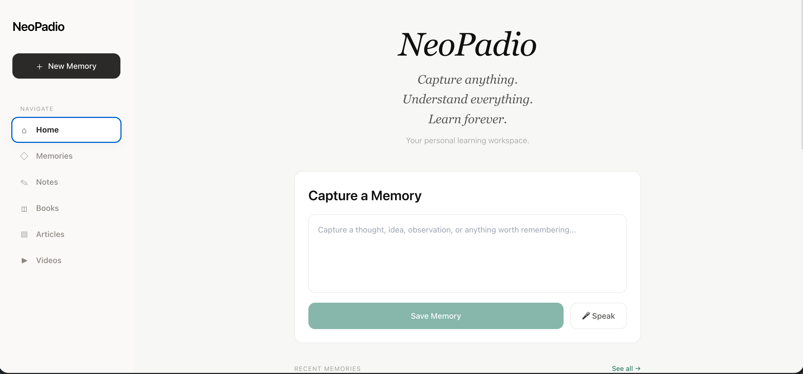
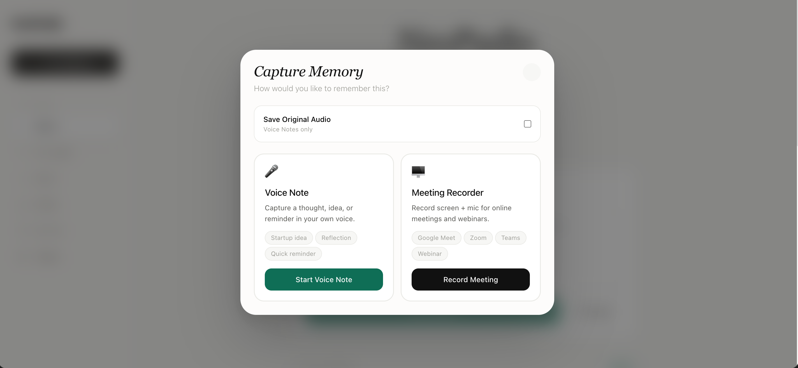
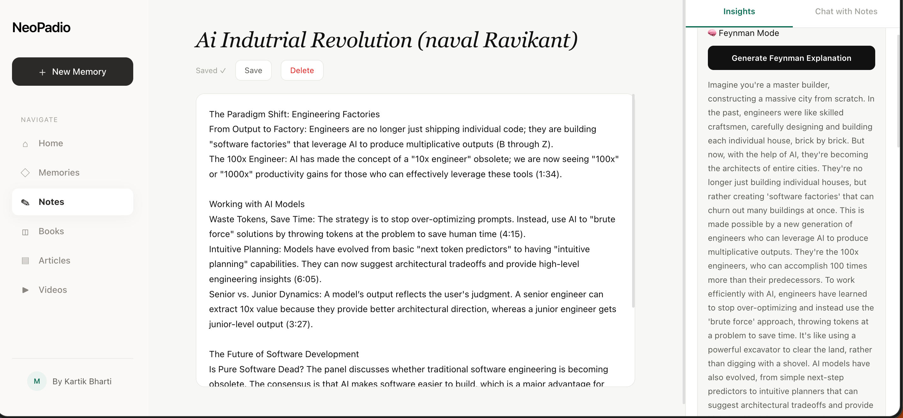
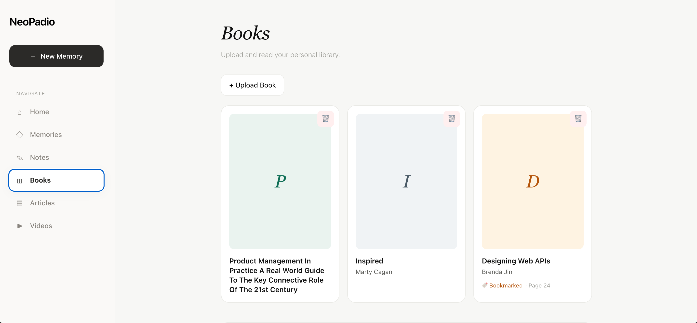
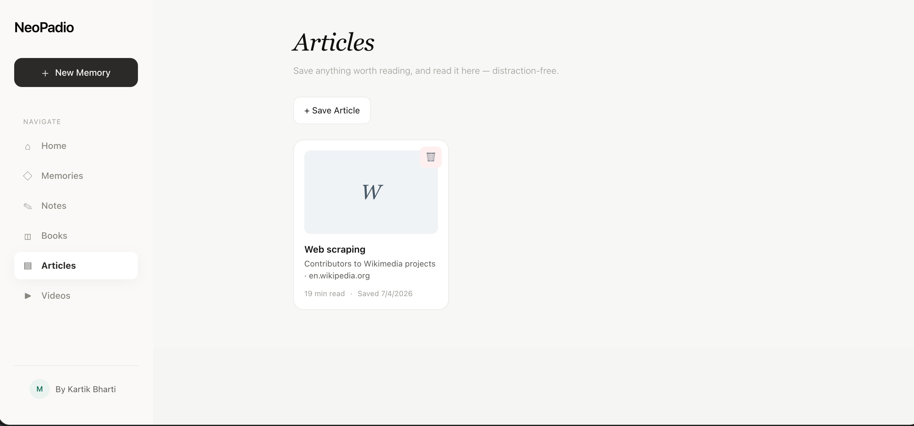
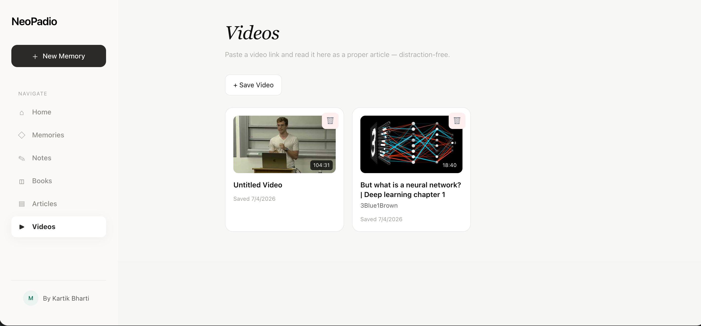

Save notes, books, articles and videos in one place. NeoPadio organizes your knowledge and lets you chat with everything you've saved.

This is the actual NeoPadio interface. Currently in private beta. Click a tab or the arrows to browse every screen.
Notes live in one app. Books are somewhere else. Articles stay buried in browser bookmarks. Videos disappear inside YouTube history.
You keep saving things. But when you need to find something or connect ideas across sources, it's gone. Not because you didn't care, but because no tool brings it all together.
NeoPadio brings your notes, books, articles and videos into one place. AI understands each one, generates summaries and key ideas, and lets you ask questions across everything you've saved.
It doesn't just store what you learn. It helps you understand it.
Add notes, upload books, save articles or paste a YouTube link.
NeoPadio generates a summary, key ideas and insights for everything you save.
Chat naturally with your notes, books, articles or videos.
Everything stays organized and searchable in one place.
You're in a meeting, on a call, or a thought just hits you while you're walking. You want to capture it right now, without breaking your flow, and understand it properly later.
Record a quick voice note, or turn on the meeting recorder to capture your screen and mic during any online call. NeoPadio transcribes it, summarizes it, and pulls out topics and action items automatically. Then ask questions across everything you've ever captured.

Capture a thought, idea, or reminder in your own voice — a startup idea, a reflection, a quick reminder.
Record screen + mic for Google Meet, Zoom, Teams or any webinar. Get the transcript and summary automatically.
Every memory gets a summary, key topics, and action items pulled out for you, no manual note-taking needed.
Search or ask questions across everything you've captured — promises, follow-ups, people, topics.
You read something interesting and want to actually understand it, not just file it away.
Write a note on any topic. NeoPadio generates insights automatically and explains difficult concepts in plain language. Then chat with your note to test and deepen your understanding.

NeoPadio reads your note and surfaces the most important concepts worth understanding deeply.
Explains any concept in plain language, like teaching it to a beginner. Switch between English and Hinglish.
Ask questions about anything in your note. Answered in the context of your own words.
Quick actions to summarize, quiz yourself, or get a simpler explanation, right from the chat panel.
You uploaded a book three weeks ago. You want to remember what it said about a specific topic, without re-reading the whole thing.
Upload any PDF to your personal library. Read it inside NeoPadio, bookmark where you left off, and get an AI analysis of the entire book. Then ask it anything.

Upload any PDF and it appears in your library. Resume reading from your bookmarked page every time.
Summary, key themes, difficulty level, and who should read it, generated from the book itself.
Ask anything about the book's content. What are the author's main arguments? Explain like I'm 15.
You saved an article to read later. Later never comes. And when it does, you've already forgotten why you saved it.
Save any article from the web with one click. Read it in a clean, distraction-free reader inside NeoPadio. Get an AI summary and key topics. Chat with it to go deeper.

Save articles from the web into NeoPadio. No more lost browser tabs or forgotten bookmarks.
Read saved articles in a clean, focused reader inside NeoPadio. No ads, no clutter.
Every article gets a summary and extracted key topics automatically when you save it.
Ask questions, get counterarguments, or ask for a simpler explanation of anything in the piece.
You watched a 2-hour lecture on YouTube. You got a lot out of it. Two days later, you remember almost nothing.
Paste a YouTube link into NeoPadio. It generates a summary, extracts key ideas, and gives you a full transcript. Chat with the video's knowledge like you'd chat with a note.

Paste any YouTube link and NeoPadio saves it to your library with the thumbnail and duration.
Every video gets a summary and a list of key ideas, generated from the video's content.
Ask questions about what was said in the video, answered from the actual content.
We're building NeoPadio phase by phase. Every feature ships when it's genuinely useful, not before.
Notes, books, articles, and videos in a single workspace. No more switching between apps or losing track of what you saved where.
Every piece of content gets a summary, key ideas, and a chat interface grounded in what you actually saved. Not generic responses.
Saving is easy. Understanding is the hard part. Every feature in NeoPadio is designed to close that gap.
We're sharing NeoPadio with a small group of early users. Book a walkthrough, send an email, or message us on WhatsApp.
Schedule a 20-minute walkthrough. See NeoPadio in action and ask us anything.
Have a question, a collaboration idea, or just want to connect? Drop us a message.
Message us first on WhatsApp. We'll reply and set up a time for a call from there.